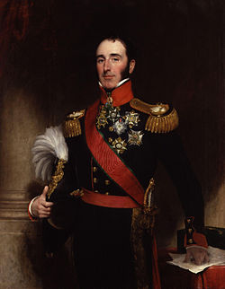
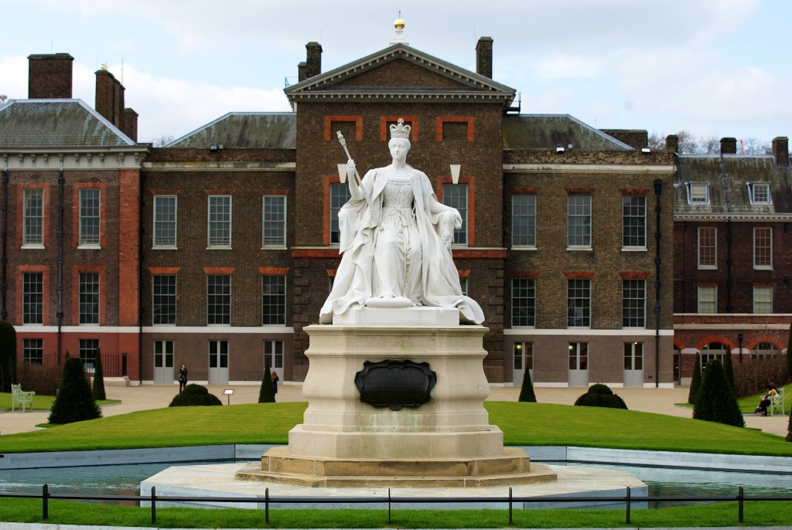
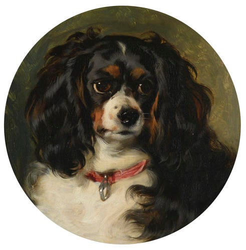

Entered into the frame is Sir John Conroy, who saw Victoire within her vulnerable position with debts from her late husband, and the struggle of loneliness began to depend on him as an Advisor that would handle multiple different tasks, including the ability to clear the family's debts. In his eyes, as the duchess's chief advisor, he might one day become the power behind the throne - if he could control both Victoria and her mother, he would gain access to a multitude of financial resources and royal affairs. That is why he devised the creation of the ‘Kensington System’, a strict set of rules Victoria had to follow throughout her childhood.
Kensington System: The system itself was set up for young Victoria's safety, such as isolating her from disease and assassinations. However, more obviously, the system seemed to be designed to break Victoria's spirit; to make her submit through surveillance and isolation. Victoria could not sleep alone in a room nor could she walk down the stairs by herself; she had to hold someone's hand each time she used the stairs, making her entirely dependent on her mother and Conroy.
Victoria's uncle was born in 1762 and was the eldest son of George III. Spent the majority of his life as a ‘King in waiting’ before ascending to the throne in 1821. George had illegally married a Catholic widow, but was persuaded to marry Princess Caroline to produce a legitimate heir to the throne; their child was Princess Charlotte. This marriage quickly ended after their daughter's birth.
Because Princess Charlotte had unfortunately passed away at the age of 21, and was the only legitimate heir to the throne at the time, due to George's two younger brothers also having no surviving children, this crisis propelled young Victoria to be the next heir to the throne.
George IV and the Duchess of Kent, Victoria's mother, had an unhealthy relationship, argumentative at the best. The king had continuously threatened to take Victoria away in order to gain control of her upbringing; this was one of the many reasons Victoria was ushered away into Kensington Palace. Although, despite the Duchess of Kent's best efforts to isolate Victoria from George and the scandals of the court, they had met multiple times. Victoria's Diary recalls George treating her to picnics and carriage drives while she states he was “very fat and gouty.”
Victoria wasn’t entirely alone in Kensington Palace; she was always accompanied by her loyal dog Dash. Dash was a Cavalier King Charles Spaniel and Victoria's best friend for many years since Victoria was forbidden to play or interact with children her own age. While Dash wasn’t human they were still inseparable going everywhere with each other until Dash’s death on December 24th 1840. His grave reads: "His attachment without selfishness, his playfulness without malice, his fidelity without deceit."



